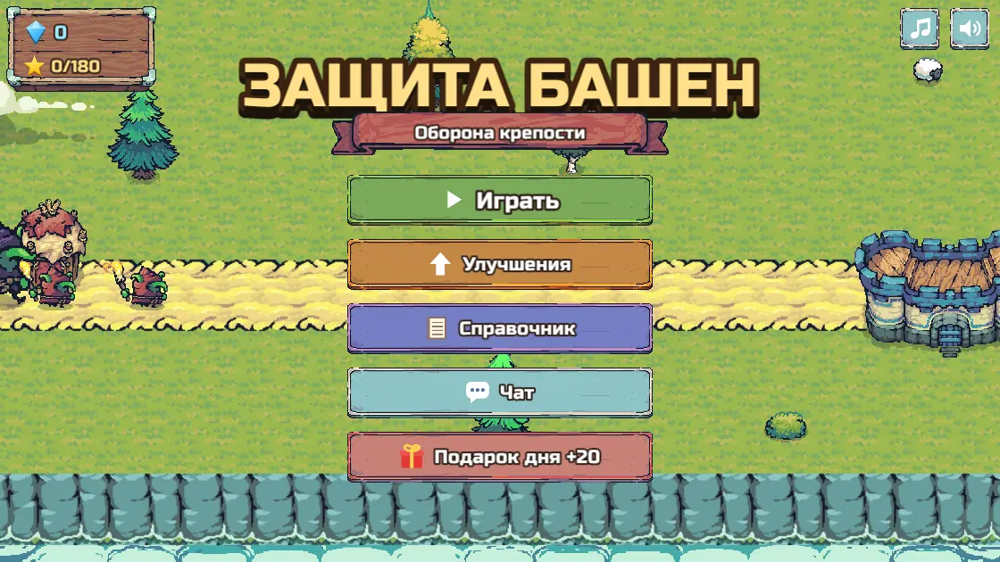
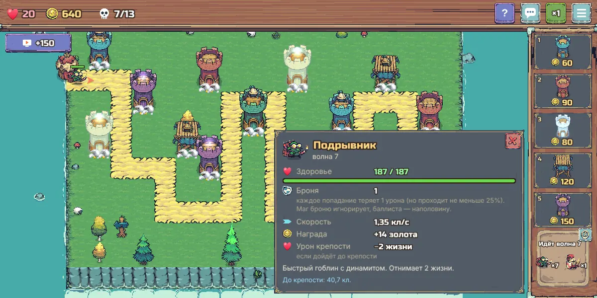
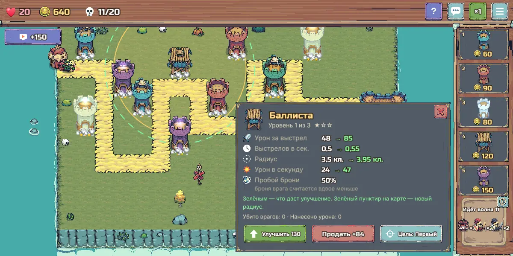

Защита башен — играть онлайн во ВКонтакте
Классическая «Защита башен» в уютном пиксельном стиле: враги идут по дороге к крепости — остановите их!
Бесплатно · без всплывающей рекламы

Об игре
Об игре «Защита башен»
Стройте башни вдоль дороги, улучшайте их и не дайте гоблинам и рыцарям дойти до крепости.
Нажмите на врага — увидите его здоровье, броню и скорость; нажмите на башню — узнаете, что даст улучшение. Полный справочник со всеми цифрами всегда под рукой.

Особенности
Что есть в игре
- 5 башен: лучники, бомбарда, ледяная башня, баллиста и башня мага — у каждой 3 уровня
- 8 видов врагов: гоблины, гоблины в бочках, подрывники, монахи-лекари, копейщики, рыцари, чёрные рыцари и вождь гоблинов
- 60 уровней в 6 мирах, до 30 волн, до трёх звёзд за уровень
- Постоянные улучшения за кристаллы и подарок каждый день
- Общий чат со всеми игроками
- Без всплывающей рекламы

Играть
Как начать играть
- Нажмите «Играть во ВКонтакте» — игра откроется в приложении или браузере.
- Разрешите запуск игры — регистрация не нужна, прогресс сохраняется в вашем аккаунте ВКонтакте.
- Играйте на компьютере или телефоне.
Частые вопросы
Сколько уровней в игре?
60 уровней в 6 мирах.
Какие есть башни?
Лучники, бомбарда, ледяная башня, баллиста и башня мага — у каждой по 3 уровня.
Другие игры и программы
Морской бой онлайн во ВКонтакте — с людьми и друзьями«Морской бой онлайн» во ВКонтакте: бои с живыми игроками, комната для игры с другом, игра с компьютером, рейти…Падающие шарики — игра во ВКонтакте: слияние шариков«Падающие шарики» во ВКонтакте: роняйте шарики в банку, одинаковые сливаются в шарик побольше. 11 размеров — о…Прыжок кометы — аркада во ВКонтакте: с орбиты на орбиту«Прыжок кометы» во ВКонтакте: одним касанием перепрыгивайте с орбиты на орбиту, собирайте звёзды и открывайте …Сортировка шариков по пробиркам — головоломка во ВКонтакте«Сортировка шариков» во ВКонтакте: разложите цветные шарики по пробиркам. Сотни уровней от 3 до 12 цветов, каж…Тетрис онлайн во ВКонтакте — играть бесплатноКлассический Тетрис во ВКонтакте: собирайте линии из падающих фигур, тень падения, запас фигуры и три следующи…Бот-кликер для Battlesmiths — клиент для Windows, демо 3 дняБот-кликер для игры Battlesmiths с клиентом под Windows. Демо-режим 3 дня бесплатно, продление на любое число …Бот для Dungeon Crusher («Крушители Подземелий») — автобой, фарм, заданияБот-кликер для Dungeon Crusher: Soul Hunters — автобой, сбор ресурсов, ежедневные задания и управление энергие…Бот для Catacombs World (BlueStacks) — фарм на автоматеБот-кликер для фарма в Catacombs World, работает с эмулятором BlueStacks на ПК. Скачать в теме ВКонтакте, паро…Бот для Dandy's World (Roblox) — ходит по этажу, жмёт F и лечитсяМини-бот для Dandy's World в Roblox: заходит в игру, ходит по этажу, жмёт F, использует предметы 1–3 и аптечку…